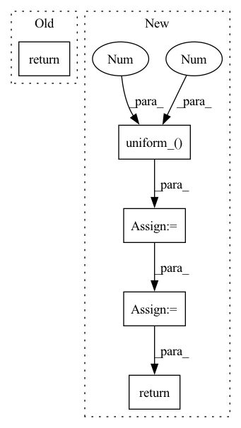

Pattern ID :16312
Before Change
super().__init__()
def forward(self, x):
return x
After Change
// sample random times
times = torch.zeros((batch,), device = device).float().uniform_(0 , 1. )
// noise sample
noise = torch.randn_like(img)
noise_level = self.log_snr(times)
padded_noise_level = right_pad_dims_to(img, noise_level)
alpha, sigma = log_snr_to_alpha_sigma(padded_noise_level)
noised_img = alpha * img + sigma * noise
// if doing self-conditioning, 50% of the time, predict x_start from current set of times
// and condition with unet with that
// this technique will slow down training by 25%, but seems to lower FID significantly
self_cond = None
if random() < 0.5:
with torch.no_grad():
self_cond = self.model(noised_img, noise_level).detach_()
// predict and take gradient step
pred = self.model(noised_img, noise_level, self_cond)
return F.mse_loss(pred, img)
// trainer class
In pattern: SUPERPATTERN
Frequency: 3
Non-data size: 5
Instances Fragment ID: 54529608
Project Name: lucidrains/chroma-pytorch
Commit Name: aed1623c205056b5a530d116d30f647eb6693b14
Time: 2022-12-04
Author: lucidrains@gmail.com
File Name: chroma_pytorch/chroma_pytorch.py
M Class Name: Chroma
N Class Name: Chroma
M Method Name: forward(2)
N Method Name: forward(2)
M Parent Class: nn.Module
N Parent Class: nn.Module
M File Name: chroma_pytorch/chroma_pytorch.py
N File Name: chroma_pytorch/chroma_pytorch.py
M Start Line: 11
M End Line: 11
N Start Line: 506
N End Line: 536
Before Change
self.blocks = nn.ModuleList([ReversibleBlock(f=f, g=g) for f, g in blocks])
def forward(self, x):
return _ReversibleFunction.apply(x, self.blocks)
After Change
blocks = self.blocks
if self.layer_dropout > 0:
to_drop = torch.empty(len(self.blocks)).uniform_(0 , 1 ) < self.layer_dropout
blocks = [block for block, drop in zip(self.blocks, to_drop) if not drop]
blocks = self.blocks[:1] if len(blocks) == 0 else blocks
return _ReversibleFunction.apply(x, blocks)
Fragment ID: 54529650
Project Name: lucidrains/reformer-pytorch
Commit Name: f989c1483f6f3d108722cfc1070933b6bee9a274
Time: 2020-02-23
Author: lucidrains@gmail.com
File Name: reformer_pytorch/reversible.py
M Class Name: ReversibleSequence
N Class Name: ReversibleSequence
M Method Name: forward(2)
N Method Name: forward(2)
M Parent Class: nn.Module
N Parent Class: nn.Module
M File Name: reformer_pytorch/reversible.py
N File Name: reformer_pytorch/reversible.py
M Start Line: 118
M End Line: 118
N Start Line: 118
N End Line: 125
Before Change
self.drop_prob = drop_prob
def forward(self, x):
return drop_path(x, self.drop_prob, self.training)
class Tokenizer(nn.Module):After Change
keep_prob = 1 - self.drop_prob
shape = (batch, *((1,) * (x.ndim - 1)))
keep_mask = torch.zeros(shape, device = device).float().uniform_(0 , 1 ) < keep_prob
output = x.div(keep_prob) * keep_mask.float()
return output
class Tokenizer(nn.Module):
def __init__(self, Fragment ID: 54529654
Project Name: lucidrains/vit-pytorch
Commit Name: cb6d749821bbf3b0bd17c9e8e64eb343f40b3f69
Time: 2022-10-29
Author: lucidrains@gmail.com
File Name: vit_pytorch/cct.py
M Class Name: DropPath
N Class Name: DropPath
M Method Name: forward(2)
N Method Name: forward(2)
M Parent Class: nn.Module
N Parent Class: nn.Module
M File Name: vit_pytorch/cct.py
N File Name: vit_pytorch/cct.py
M Start Line: 153
M End Line: 153
N Start Line: 150
N End Line: 160